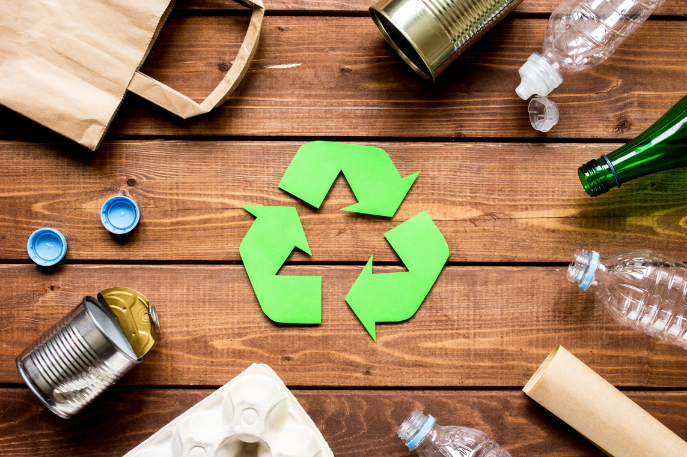

<ion-header class="ion-no-border">
  <ion-toolbar color="primary" no-border>
    <!-- <ion-buttons slot="start">
      <ion-button menu="main-menu">
        
      </ion-button>
    </ion-buttons> -->
    <ion-buttons slot="start">
      <ion-menu-button size="large" menu="main-menu"></ion-menu-button>
    </ion-buttons>

    <ion-title>

    </ion-title>
    <ion-buttons slot="end">
      <ion-button routerLink="/new-request">
        <ion-icon size="large" name="add-outline"></ion-icon>
      </ion-button>
    </ion-buttons>

    <!-- <ion-buttons slot="end">
      <ion-button>
        
      </ion-button>
    </ion-buttons> -->
  </ion-toolbar>
</ion-header>

<ion-content [fullscreen]="true">
  <div class="banner">
    

    <div class="caption ion-padding">
      Your activities <br>
      on <span style="font-style: italic; color: #6CC57C; font-weight: bold;">EcoCyc</span>
    </div>

    <div class="search">
      <ion-item lines="none" class="ion-no-padding">
        <ion-icon slot="start" name="search-outline"></ion-icon>
        <ion-input placeholder="Search requests"></ion-input>
        <ion-button slot='end'>
          
        </ion-button>
      </ion-item>
    </div>
  </div>

  <div class="title">
    <h2>Latest Requests</h2>

    <!-- <p>See all</p> -->
  </div>

  <div *ngIf="requests?.length === 0" style="padding: 15px; margin-bottom: 50px; color: red;">
    <h2>You have not yet created a request</h2>
  </div>

  <div *ngIf="requests?.length > 0" class="event-slider">
    <ion-slides [options]="{ slidesPerView: 'auto', zoom: false, grabCursor: true }" class="default-left-padding">
      <ion-slide *ngFor="let request of requests">
        <ion-col (click)="goToDetail(request)" class="ion-text-left">
          <ion-card>
            <ion-card-header class="ion-no-padding">
              
              
            </ion-card-header>

            <ion-card-content>
              <p class="date">{{request.createdAt}}</p>
              <h2 class="eventname">{{request.category}} - {{request.fullname}}</h2>
              <p class="location"><ion-icon name="location"></ion-icon>{{request.addressLine1}}, {{request.city}}</p>

              <div class="additional-info">

                <ion-badge *ngIf="request.status === 'new'" color="success" class="time">{{request.status}}</ion-badge>
                <ion-badge *ngIf="request.status === 'cancelled'" color="danger" class="time">{{request.status}}</ion-badge>
                <ion-badge *ngIf="request.status === 'picked up'" color="primary" class="time">{{request.status}}</ion-badge>
              </div>
            </ion-card-content>
          </ion-card>
        </ion-col>
      </ion-slide>

    </ion-slides>
  </div>

  <div *ngIf="requests?.length > 0" class="default-top-padding title">
    <h2>Activities in figures</h2>

  </div>

  <div *ngIf="requests?.length > 0" class="live-event">
    

    <div class="info">
      <h5 style="color: #364f6b;">Total Requests &nbsp;<ion-badge color="tertiary">{{requests.length}}</ion-badge></h5>
      <!-- <ion-list>
        <ion-item lines="none">
          <ion-label style="color: #364f6b;">Total Requests</ion-label>
          <ion-badge color="tertiary" slot="end">{{requests.length}}</ion-badge>
        </ion-item>
        <ion-item lines="none">
          <ion-label style="color: #364f6b;">Pending Requests</ion-label>
          <ion-badge color="tertiary" slot="end">34</ion-badge>
        </ion-item>
      </ion-list> -->

      <!-- <div class="content">
        <h6>Total Requests&nbsp;&nbsp;<ion-badge color="tertiary">34</ion-badge></h6>
        <h6>Pending Requests</h6>&nbsp;&nbsp;<ion-badge color="tertiary">10</ion-badge>


      </div> -->

      <!-- <div class="indicator">
        <div>Live</div>
      </div> -->
    </div>
  </div>
</ion-content>

